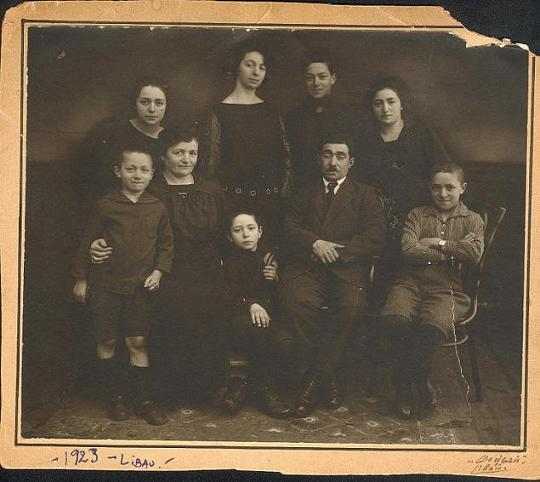

Liepaja (Libau)
Latvia, sandwiched in between Estonia to the north and Lithuania to the south, is a heavily forested country of about 2.5 million people. Its capital, Riga, is the largest and most cosmopolitan city in the Baltics, and it has an old central core section that has been preserved, is being fixed up, and is a worthwhile tourist attraction. (For tourism and other information on Latvia, see https://www.latvia.travel/en.)
Much of Latvian history has been quite bloody, with parts or all of its territory always under the thumb of German, Polish, Swedish or Russian conquerors. It is estimated that by the time the country finally became a single, fully independent entity (in 1921), about 40% of the ethnic Latvian population had either perished or emigrated. The Russians took over in 1939-41 and again during 1945-91, and Germany, of course, occupied all of the Baltics during 1914-18 and 1941-45. The years of Stalinist control were particularly damaging, with more than 200,000 Latvians killed or deported either prior or after Nazi rule, and thus anti-Russian sentiment runs very deep. Nazi Germany was a comparatively benevolent occupier – except, of course, when it came to the country’s Jews, who were annihilated. The Russians industrialized Latvia mostly with their own imported work force, and they turned the port city of Liepaja into the home base of their large Baltic fleet. Even today, ethnic Latvians comprise a minority in all the major cities, with ethnic Russians accounting for one-third of the country’s total population and for nearly half of the residents of Riga.
At some point in the late 1800s or early 1900s, Cusiel Porzecanski (1875?-1949) moved to the relatively important city of Liepaja in modern-day Latvia from the rural town of Simnas in modern-day Lithuania. It is not certain whether he was already married to Lina Halpern (1874-1964), who also hailed from Simnas, or whether he met and married Lina after he arrived in Liepaja. Lina had three brothers living in Liepaja (Alter, Itzik and Leon) and a sister (Sheine) back in Lithuania. It was Leon Halpern, who had been a soldier for the Russians in their war against Japan (1905) and Germany (1914-18), had fallen prisoner to the Germans, and had ended up in Kaunas (Kovno) in Lithuania, who was the first to emigrate to Montevideo, Uruguay in 1923. (For the Halpern family tree, click here.)
Leon was followed there by Cusiel’s eldest son Bernardo (“Bere”) – my father – and by his cousin Leon Konichetzky in 1925. Upon hearing that life in Uruguay was better than in it was in (by now independent) Latvia, Cusiel and all but one of his children [daughters Berta (Jabkowski) and Frida (Olchik) and sons Aron (“Rone”), Abram (“Muca”) and Nachman (“Lalo”)] picked up and left for Uruguay in November 1926. (For an account of childhood memories in Libau written in Spanish by Aron Porzecanski, click here.) Berta later moved to Buenos Aires, Argentina, had a family and eventually died there, giving rise to the Hecht/Lerman branch. Nachman moved to Israel in the 1960s, giving rise to the Raz branch – though he came back to Montevideo in his old age and died there. And Bernardo moved to Canada in the 1970s and eventually passed away there (in Victoria, B.C.), giving rise to Canadian, U.S. and Israeli offshoots. Frida, Aron and Abram and most of their children, meanwhile, lived all of their adult lives in Montevideo.
The only one to stay behind in Liepaja (Libau, as it was known whenever it was occupied by the Germans) was Cusiel’s eldest daughter, Ana, who was already married to Abram Braumann, a tailor. As detailed below, Ana and her family succumbed to the Holocaust in 1941, when the Nazis and their Latvian collaborators killed virtually all of Liepaja’s 7,000 or so Jews. The few relatives who never moved from Lithuania to Latvia and then Uruguay, or else directly from Lithuania to Uruguay, the U.S., Palestine or South Africa, became Holocaust victims there (see section on Simnas).
Up until the 20th century, Jews for the most part were allowed to live only in towns and cities located in the inland areas of Eastern Europe, and could not freely move to a port city such as Liepaja. However, Cusiel Porzecanski was trained as a baker in Simnas, and because there apparently was a shortage of skilled people in the coastal region of Courland, he was authorized to settle in Liepaja. The city dates back at least to the mid-1200s, has a valuable ice-free port and wonderful old buildings that are now being restored. While the town has suffered from polluting industrialization, it has beautiful white beaches for the benefit of its residents – though the water is very cold. The family house and bakery was located at Albertstrasse 19, now renamed Terauda iela, and it still stands there at the corner of Augustes iela, in a run-down section of the city that used to be a blue-collar area, located near factories and the railroad station. Pictures of the property have been positively identified by Aron Porzecanski, the only surviving member of the family that lived there.
Ana Braumann Porzecanski (or, in Latvian, Hanas Braumanas Porzecanskis) reportedly resided with her husband Abram and children Isak and David at what is now Juras 20-4, but that property stands no more. While we do not know precisely when they were butchered, Abram was probably killed in July 1941 and Ana and the children in mid-December of that year. Most Jewish men were shot during the summer and fall of that year; at first near the harbor’s lighthouse, then on the grounds of the naval base, and finally in the dunes of Skede (Skeden) some 15km north of town. Women and children were largely spared until 14-15 December 1941, when as many as 2,750 Jews were shot at Skede beach. Sickening pictures of the shootings, taken by the Germans supposedly to document that the massacre was carried out primarily by Latvian security forces, were secretly copied by a survivor and can be seen at http://www.ushmm.org/research/collections/, search photos for Liepaja and see pictures #1-13, or else go to http://motlc.wiesenthal.com/albums/palbum/p02/a0111p2.html). The killings continued in early 1942, and by the time a ghetto was established in Liepaja in July 1942, fewer than 850 Jews were left out of more than 7,000.
The fate of Jews in Liepaja was typical of what took place elsewhere in the country. Latvia was occupied by the Germans in July 1941, and within weeks they had installed a civil administration including local pro-Nazi and anti-Russian nationalists. One of its first acts was the promulgation of a series of anti-Jewish ordinances that applied to an estimated 75,000 Latvian Jews. Even before the Nazis arrived, Latvian Jews had suffered from anti-Semitism at the hands of Latvian paramilitary or Fascist organizations, and they went on to collaborate with the Nazis in the annihilation of the Jewish community. While the SS Einsatzgruppen (“action commandos”) played a leading role in the killing of some 65,000 Latvian Jews, they recruited more than 1,000 local collaborators to carry out many of the executions – as documented so well in the case of the executions at Skede.
The Holocaust in Latvia took place in two stages. The first was in the summer of 1941, when there were massive killings of Jews in rural areas and selected killings of male Jews in the cities. The largest number of executions was committed by a local volunteer killing unit, the Arajs commando, with mostly indirect involvement on the part of SS officers. The second period began in November 1941, when the elimination of Jews became strictly centralized, led and overseen by the SS with assistance from Latvian collaborators. The Germans also shipped more than 20,000 Jewish prisoners to Latvia from other parts of Europe in 1942-43, and over half of these prisoners were then executed on Latvian soil. Many Jews were kept in concentration camps to provide slave labor to industry, especially in the Riga area, mainly at Salaspils and Kaiserwald. Conditions in these camps were terrible, leading to heavy loss of life among the inmates. The Kaiserwald concentration camp contained the Jewish survivors from ghettos in Riga, Daugavpils, Liepaja and even Vilna (Lithuania). When the Soviet advance in the summer of 1944 forced a German retreat from the Baltic states, the surviving inmates of the Kaiserwald camp were deported by the Germans to the Stutthof concentration camp near Danzig, and from there were sent to various other camps.
The official website for Liepaja is http://www.liepaja.lv/en/. For tourist information, see http://www.liepaja.org/.
For a history of the Jews in Latvia, please see http://www.heritagefilms.com/LATVIA.html. For a description of how the Jews were disliked because of their collaboration with the Russians, see http://vip.latnet.lv/LPRA/frank_gordon.htm. For a database of Liepaja victims and survivors that includes Hana Braumann Porzecanski and her family, see http://www.ej-anders.com/. The chapter dealing with the killings in Liepaja from Andrew Ezergailis’s seminal book, The Holocaust in Latvia (Riga: Historical Institute of Latvia, 1996, available through the US Holocaust Memorial Museum), can be read in http://www.ej-anders.com/EZERG.PDF.

The Porzecanskis in Libau, 1923
From left to right, back row:
Frida, Ana, Bernardo and Berta
Front row:
Nachman, Lina, Abram, Cusiel and Aron
Liepaja: The Porzecanski homes
Liepaja, Part 1
Liepaja, Part 2
Back to the trip homepage